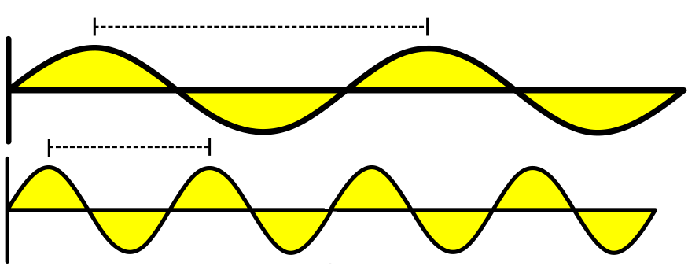
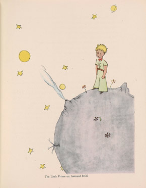

Properties of radio waves
The wavelength of a wave is how far it
travels in the time it takes it to cycle once. Higher frequency waves
have a shorter wavelength than longer frequency ones.

Wavelength
We often identify groups of frequencies, or bands, by their wavelength. For instance, frequencies
between 144 MHz and 148 MHz form the very popular 2 meter band. Their
wavelength is about 2 meters.
Calculate wavelength by dividing 300 by the frequency in MHz. For
144 MHz, the wavelength is:
Bands
Frequency groups are called
bands. For amateur radio, there are three major groups:
| High Frequency, or HF | 3 MHz to 30 MHz |
| Very High Frequency, or VHF | 30 MHz to 300 MHz |
| Ultra-High Frequency, or UHF | 300 MHz to 3000 MHz |
There are more bands above and below these, but these are the most
commonly used ones. The HF band in particular is divded into several
smaller bands, like 80 meters, 40 meters, and others.
How radio waves travel
Propagation describes how waves travel. Radio
waves move through different materials in different ways, depending
mostly on the material, and the wave's frequency. Sometimes waves are
absorbed, sometimes bent, sometimes reflected, and sometimes they
simply keep going.
Radio Horizon
The distance where the curvature of the earth blocks a signal. The
Earth seems less curved to radio than to light, so this is often a bit
further than the visual horizon.
VHF and UHF propagation
Most hand-held radios (HT's) use VHF or UHF frequencies. The
atmosphere and the ground mostly absorb these waves, so their range is
generally limited to the radio horizon. UHF goes through buildings
better than VHF, so use UHF inside buildings.
Mobile transmission
Signals from moving transmitters (like a transmitter in a car)
sometimes have a fluttering sound. This is called picket fencing.
VHF and UHF propagation
| Multi-path distortion |
Because of reflection or refraction, multiple copies of a
wave arrive at a receiver and interfere with each
other. |
| Knife-edge propagation |
Signals are partially refracted around objects with sharp
edges |
These distortions can cause problems, especially in cities. If you find
your signal is weak, try moving a few feet to avoid them.
Polarization
Antenna type and position controls a wave's
polarization, or whether the wave goes up and down,
or side to side. Handheld radio antennas are generally upright, so
waves are vertically polarized.
Polarization
We generally use horizontal polarization for long-distance VHF and UHF
contacts. If a transmitter is vertically polarized, a horizontally
polarized receiver may find the signals are significantly weaker.
Atmosphere and VHF
The atmosphere has several layers, including the troposphere, and the E
layer of the ionosphere. You don't need to know the difference, just
that both sporadic E layer, tropospheric ducting, and tropospheric scatter can allow VHF signals to travel
unusually long distances. Tropospheric ducting is caused by temperature
inversions in the atmosphere.
Bouncing signals

It's possible to bounce signals off of many interesting things,
including meteors and auroras. For "meteor scatter", 6 meters is best.
Signals reflected off an aurora can be distorted, and change strength
rapidly.
HF Propagation
HF signals bounce off of the ionosphere, so they travel much farther
than VHF and UHF signals, which the atmosphere absorbs. Solar activity
affects propagation dramatically. During the day, higher frequencies
travel furthest, but at night, lower frequencies are best.
HF Propagation
Bouncing off the atmosphere changes a signal's polarization anyway, so
for HF you can use either vertical or horizontal antennas. HF signals
can suffer multi-path distortion, like VHF and UHF signals can. This
causes fading signals when reception is generally good.
HF Propagation
Sunspots also affect HF waves. Lots of sunspots means better 10 meter
propagation.

Antennas
Antennas come in many forms. One simple antenna is a wire strung
between two trees, with the signal fed into the middle. This is called
a
dipole, and because it is parallel to the
Earth's surface, it is horizontally polarized.
Antennas
Antennas must be designed for the frequency on which they'll be used,
especially when used for transmitting. Dipoles are often nearly (but
not quite) half a wavelength long. For use in the 6 meter band, a half
wavelength dipole would be 112 inches.
Antennas
Another common antenna is the quarter-wave vertical, which is
vertically polarized. A quarter-wave antenna for 146 MHz is 19 inches
long.
Antennas
To make an antenna work better on a higher frequency, shorten it. To
make it work for a longer frequency, insert an inductor, like the one
on this antenna.
Directional Antennas
Some common antennas are
directional, meaning
the concentrate the signal in one direction. The
gain is how concentrated the signal is in a that
direction.
Handheld and mobile antennas
"Rubber duck" antennas like found on most handhelds are not as
efficient as a full-sized antenna. Cars block VHF signals, so when
inside a vehicle their signals can be much weaker than when outside.
Roof-mounted antennas provide the most uniform signal. For mobile VHF
and UHF use, 5/8 wave antennas often have better gain and improved
coverage over 1/4 wave antennas.
Feedlines
The feedline carries the signal between the antenna and the radio.
There are many types, but coaxial cable is common, because it's easy.
Coaxial cable suffers higher loss with higher frequencies.
Coaxial Cable
Amateur radios often use RG-58 or RG-8 coaxial cable. RG-8 is larger,
and has less loss. Air-insulated hard line has the least loss for VHF
and UHF, but it requires special handling, particularly to prevent
water absorption. All coaxial cable can suffer from moisture damage,
especially when sunlight damages its coating. All feed lines and
connectors should be protected from water, to prevent increased loss.
Loose connections can also cause problems.
Feedline connectors
You'll need to know two types of feedline connectors. PL-259 is common,
but Type N is better for higher frequencies.
|
|
| PL-259 female | Type N female |
Impedance and Standing Wave Ratio
Antennas and feedlines have impedance, which
measures how much they resist AC current. Like resistance, it's
measured in ohms. Most amateur radios expect 50 ohm feedline impedance.
Standing wave ratio, or SWR, can tell you how
well the impedance of the radio matches the feedline. Low SWR means
power is transmitted efficiently. High SWR means some signal is being
wasted as heat.
SWR
Measure SWR with an in-line SWR meter, connected in series between the
transmitter and antenna, or with a directional wattmeter. An antenna
analyzer can determine if an antenna works well at a certain frequency,
and an antenna tuner can match an antenna to a transmitter's output
impedance.
Different SWR values
| 1:1 | Perfect impedance match |
| 2:1 | Protection circuits will kick in, in most transmitters |
| 4:1 | There's an impedance mismatch |
Dummy Load
A dummy load is used to prevent signals from being sent, when making
tests. It's just a resistor and a heat sink.